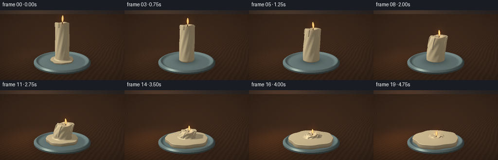
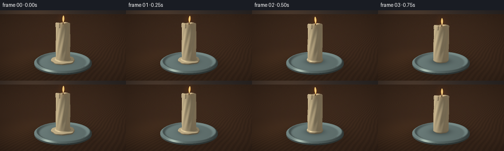

CODING AGENTS AS PIXEL WORLD MODELS
traex/GPT-6.1-Sol · phygen_097
点击播放 · 原生 RGB 像素
此结果可播放，但该运行尚未通过最终提交审核。页面展示不代表评测通过。
逐轮保存的候选
回放视频、检查图与代码变化。
每份候选均可单独播放。实际图片检查记录在下方工具轨迹中。
候选 01播放与检查图
点击播放 · 原生 RGB 像素


展开代码变化
--- 上一保存版本
+++ 本次保存版本
@@ -0,0 +1,260 @@
+from pathlib import Path
+import numpy as np
+from PIL import Image, ImageDraw, ImageFilter
+from artifact_io import save
+
+ROOT=Path(__file__).resolve().parent
+W,H=512,288
+Y,X=np.mgrid[0:H,0:W]
+rng=np.random.default_rng(47)
+# A stable, slightly elevated macro camera.
+cam=np.array([4.0,3.25,7.0],np.float32)
+target=np.array([0.,1.23,0.],np.float32)
+f=(target-cam); f/=np.linalg.norm(f)
+r=np.cross(f,np.array([0.,1.,0.])); r/=np.linalg.norm(r)
+u=np.cross(r,f)
+q=np.tan(np.deg2rad(31.5/2))
+rays=f+((X+.5-W/2)/(H/2)*q)[...,None]*r-((Y+.5-H/2)/(H/2)*q)[...,None]*u
+rays=rays/np.linalg.norm(rays,axis=-1)[...,None]
+rays=rays.astype(np.float32)
+light=np.array([-3.7,6.3,4.0],np.float32)
+
+
+def smin(a,b,k):
+ h=np.maximum(k-np.abs(a-b),0)/k
+ return np.minimum(a,b)-h*h*k*.25
+
+
+def params(t):
+ p=t*t*(3-2*t)
+ h=2.48*(1-.945*p)
+ rad=.465+.15*np.sin(np.pi*p)
+ poolh=.055+.17*p
+ volume=np.pi*.465**2*2.48
+ remain=np.pi*rad**2*h*.94
+ pr=np.sqrt(max(.18,(volume-remain)/(np.pi*poolh)))
+ pr=min(pr,1.63)
+ return p,h,rad,poolh,pr
+
+
+def wax_sdf(points,t):
+ p,h,rad,ph,pr=params(t)
+ x,y,z=points[...,0],points[...,1],points[...,2]
+ base=.18+ph*.58
+ fy=np.clip((y-base)/h,0,1)
+ bend=.25*np.sin(np.pi*p)*fy**2
+ cx=x-bend
+ cz=z+.09*p*fy*fy
+ ang=np.arctan2(cz,cx)
+ rr=np.sqrt(cx*cx+cz*cz)
+ # Wrinkling, bowing and soft asymmetric shoulders increase with heating.
+ radius=rad*(1-.085*fy)+.015*np.sin(ang*9+fy*10)*np.sin(np.pi*fy)
+ radius+=p*.033*np.sin(ang*3+fy*4)
+ top=base+h+.028*np.sin(ang*3+.5)*np.clip(rr/rad,0,1)+p*.036*np.sin(ang*5)
+ ds=rr-radius
+ dv=np.maximum(base-y,y-top)
+ body=np.minimum(np.maximum(ds,dv),0)+np.sqrt(np.maximum(ds,0)**2+np.maximum(dv,0)**2)-.023
+ # Melted well around the black cotton wick.
+ crater=np.sqrt((cx/.28)**2+((y-(base+h+.065))/.135)**2+(cz/.27)**2)
+ body=np.maximum(body,(1-crater)*.12*(1-.6*p))
+ # Thick runs of liquid wax adhere to the sides, with gravity-directed rounded tips.
+ for j,theta in enumerate([.2,1.55,2.4,3.15,4.0,5.25]):
+ onset=.08+j*.026
+ a=np.clip((p-onset)*2.0,0,1)
+ length=h*(.08+.75*a)*(1-.35*p)
+ rad_d=(.032+.042*a)*(1-.58*p)
+ dx=(rad*.985)*np.cos(theta)+bend
+ dz=(rad*.985)*np.sin(theta)-.09*p*fy*fy
+ upper=base+h-.02
+ lower=upper-length
+ sy=np.clip(y,lower,upper)
+ drip=np.sqrt((x-dx)**2+(z-dz)**2+(y-sy)**2)-rad_d
+ body=smin(body,drip,.035)
+ # The displaced material spreads across the dish as a continuous scalloped pool.
+ angle=np.arctan2(z,x)
+ poolrad=pr*(1+.032*np.sin(5*angle+.6)+.020*np.sin(9*angle-1))
+ py=.18+ph*.48
+ a=np.sqrt(x*x+z*z)-poolrad
+ b=np.abs(y-py)-ph*.48
+ pool=np.minimum(np.maximum(a,b),0)+np.sqrt(np.maximum(a,0)**2+np.maximum(b,0)**2)-.027
+ return smin(body,pool,.105)
+
+
+def norm(points,t):
+ e=.003
+ out=[]
+ for k in range(3):
+ d=np.zeros(3,np.float32);d[k]=e
+ out.append(wax_sdf(points+d,t)-wax_sdf(points-d,t))
+ nn=np.stack(out,-1)
+ return nn/(np.linalg.norm(nn,axis=-1)[...,None]+1e-9)
+
+
+def project(p):
+ v=np.array(p)-cam
+ depth=np.dot(v,f)
+ return (W/2+np.dot(v,r)/depth*H/2/q,H/2-np.dot(v,u)/depth*H/2/q)
+
+
+def render(t,idx):
+ p,h,rad,ph,pr=params(t)
+ # Warm, defocused studio wall; fixed film grain and very subtle light falloff.
+ horizon=(Y/H)
+ bg=np.zeros((H,W,3),np.float32)
+ glow=np.exp(-(((X-W*.23)/(W*.35))**2+((Y-H*.17)/(H*.65))**2))
+ for c,v in enumerate([39,33,31]):
+ bg[...,c]=v+(1-horizon)*12+glow*[36+12*p,22+3*p,10][c]
+ # Background bokeh, kept well out of focus and subordinate to the subject.
+ for bx,by,sz in [(39,65,15),(419,61,23),(479,110,12)]:
+ b=np.exp(-((X-bx)**2+(Y-by)**2)/(2*sz*sz))
+ bg+=b[...,None]*np.array([12,8,4])
+ # A dark walnut tabletop, evaluated at the true perspective intersection.
+ dt=-cam[1]/rays[...,1]
+ ground=(dt>0)&(rays[...,1]<0)
+ pos=cam+dt[...,None]*rays
+ xx,zz=pos[...,0],pos[...,2]
+ wood=np.sin(24*xx+1.8*np.sin(zz*.8)+.4*np.sin(zz*3))
+ wood+=.45*np.sin(81*xx+2.2*np.sin(zz*1.6))+.18*np.sin(180*xx+zz)
+ fade=np.clip((12-zz)/13,0,1)
+ table=np.stack([62+wood*4.2,42+wood*2.8,29+wood*1.8],-1)
+ table*= (.72+.28*fade)[...,None]
+ heat=np.exp(-((xx+2.3)**2+(zz-1.2)**2)/8)
+ table+=heat[...,None]*np.array([12+20*p,8+7*p,4])
+ # Broad contact shadow under the dish.
+ shadow=np.exp(-(xx**2+zz**2)/2.9)
+ table*= (1-.45*shadow)[...,None]
+ bg[ground]=table[ground]
+
+ # Shallow, glazed ceramic saucer: lathed profile, with a thin raised lip.
+ # Ray march the dish only, using a height-profile signed distance.
+ def plate_sdf(P):
+ rr=np.sqrt(P[...,0]**2+P[...,2]**2)
+ yy=P[...,1]
+ lip=.125+.135*np.exp(-((rr-1.78)/.13)**2)
+ return np.maximum(np.maximum(yy-lip,.075-yy),rr-1.92)
+ dist=np.full((H,W),4.9,np.float32)
+ active=np.ones((H,W),bool)
+ for _ in range(64):
+ pp=cam+dist[...,None]*rays
+ ds=plate_sdf(pp)
+ hit=ds<.0015
+ active &= ~hit & (dist<12)
+ if not active.any():break
+ dist[active]+=np.maximum(ds[active],.002)*.88
+ pp=cam+dist[...,None]*rays
+ mask=plate_sdf(pp)<.003
+ mask &= dist<dt
+ eps=.003
+ pn=[]
+ for k in range(3):
+ e=np.zeros(3);e[k]=eps
+ pn.append(plate_sdf(pp+e)-plate_sdf(pp-e))
+ pn=np.stack(pn,-1);pn/=np.linalg.norm(pn,axis=-1)[...,None]+1e-8
+ ld=light-pp;ld/=np.linalg.norm(ld,axis=-1)[...,None]
+ diffuse=np.maximum(np.sum(pn*ld,-1),0)
+ half=ld-rays;half/=np.linalg.norm(half,axis=-1)[...,None]+1e-8
+ spec=np.maximum(np.sum(pn*half,-1),0)**65
+ speck=np.sin(pp[...,0]*204)*np.sin(pp[...,2]*177)*1.2
+ ceramic=np.array([123,143,140])[None,None,:]*(.40+.60*diffuse)[...,None]
+ ceramic+=spec[...,None]*np.array([85,88,77])+speck[...,None]
+ # Wax casts an ambient occlusion shadow on its receiving plate.
+ rr=np.sqrt(pp[...,0]**2+pp[...,2]**2)
+ occl=np.exp(-rr**2/(.34+.7*p))*(.44-.17*p)
+ ceramic*= (1-occl)[...,None]
+ bg[mask]=ceramic[mask]
+
+ # Primary molten wax geometry. Bounding sphere makes the march efficient.
+ center=np.array([0,1.15,0],np.float32)
+ oc=cam-center
+ bb=np.sum(rays*oc,-1)
+ cc=np.dot(oc,oc)-2.3**2
+ discr=bb**2-cc
+ eligible=discr>=0
+ distw=-bb-np.sqrt(np.maximum(discr,0))
+ distw=np.maximum(distw,0)
+ active=eligible.copy()
+ hitw=np.zeros((H,W),bool)
+ for _ in range(90):
+ inds=np.where(active)
+ if len(inds[0])==0:break
+ P=cam+distw[inds][:,None]*rays[inds]
+ d=wax_sdf(P,t)
+ done=d<.0014
+ hitw[inds[0][done],inds[1][done]]=True
+ active[inds[0][done],inds[1][done]]=False
+ remain=~done
+ ii=(inds[0][remain],inds[1][remain])
+ distw[ii]+=np.maximum(d[remain],.001)*.78
+ active &=distw<11
+ hitw &= (distw<dt)&((~mask)|(distw<dist))
+ P=cam+distw[hitw][:,None]*rays[hitw]
+ N=norm(P,t)
+ L=light-P;L/=np.linalg.norm(L,axis=-1)[:,None]
+ diff=np.maximum(np.sum(N*L,-1),0)
+ view=-rays[hitw]
+ halfway=L+view;halfway/=np.linalg.norm(halfway,axis=-1)[:,None]
+ specular=np.maximum(np.sum(N*halfway,-1),0)**(42-17*p)
+ # Short shadow rays preserve creases and hanging droplets.
+ vis=np.ones(len(P),np.float32)
+ travel=np.full(len(P),.016,np.float32)
+ for _ in range(17):
+ ds=wax_sdf(P+N*.007+L*travel[:,None],t)
+ vis=np.minimum(vis,np.clip(12*ds/travel,0,1))
+ travel+=np.maximum(ds,.012)
+ shade=.48+.48*diff*(.35+.65*vis)
+ # Warm translucency inside wax, ivory highlights and amber shadows.
+ color=np.array([240,217,170])[None,:]*shade[:,None]
+ subsurface=(1-diff)*np.maximum(np.sum(-N*L,-1),0)*.14
+ color+=subsurface[:,None]*np.array([90,46,12])
+ color+=specular[:,None]*np.array([55+35*p,52+30*p,42+20*p])
+ tiny=np.sin(P[:,0]*131+P[:,1]*78)*np.sin(P[:,2]*146)*.65
+ color+=tiny[:,None]
+ contact=np.clip((P[:,1]-.17)/.12,0,1)
+ color*= (.80+.20*contact)[:,None]
+ bg[hitw]=color
+ im=Image.fromarray(np.uint8(np.clip(bg,0,255)))
+ # Wick stays on the sinking wax surface. Flame is a luminous, translucent
+ # tapered volume, separate from the opaque solid and not a painted icon.
+ top=.18+ph*.58+h-.065
+ bend=.25*np.sin(np.pi*p)
+ wickbase=np.array([bend,top,-.09*p])
+ wicktop=wickbase+np.array([.015,.15-.045*p,.008])
+ d=ImageDraw.Draw(im)
+ a=project(wickbase);b=project(wicktop)
+ d.line([a,b],fill=(43,31,22),width=3)
+ d.line([(a[0]+1,a[1]),(b[0]+1,b[1])],fill=(90,58,30),width=1)
+ flamebase=wicktop+np.array([0,-.02,0])
+ fx,fy=project(flamebase)
+ flameh=29*(1-.34*p)
+ # Soft light spill around the flame.
+ gl=np.exp(-(((X-fx)/28)**2+((Y-(fy-9))/34)**2)*2)
+ arr=np.asarray(im).astype(np.float32)
+ arr+=gl[...,None]*np.array([18,8,1])
+ v=(fy-Y)/flameh
+ sway=2.1*np.sin(idx*2.2)+.9*np.cos(idx*.9)
+ axis=fx+sway*np.clip(v,0,1)**1.5
+ width=(4.8*(np.sin(np.pi*np.clip(v,0,1))**.7)+.5)*(1-.22*p)
+ across=np.abs(X-axis)/(width+1e-5)
+ inside=(v>0)&(v<1)&(across<1)
+ alpha=np.clip((1-across)*3.3,0,1)*np.clip(v*15,0,1)*np.clip((1-v)*12,0,1)
+ core=np.clip((1-across)*1.15,0,1)
+ flame=np.stack([255+core*0,128+core*119,18+core*153],-1)
+ flame[...,2]+=np.clip((.15-v)*6,0,1)*90
+ alpha*=inside
+ arr=arr*(1-alpha[...,None])+flame*alpha[...,None]
+ # Tiny glowing wick, surrounded by a blue combustion foot.
+ ember=Image.fromarray(np.uint8(np.clip(arr,0,255)))
+ ed=ImageDraw.Draw(ember)
+ ed.ellipse((fx-1.1,fy-1.6,fx+1.1,fy+.8),fill=(255,188,83))
+ # Optical vignette and downsampling antialiasing.
+ arr=np.asarray(ember).astype(np.float32)
+ vignette=1-.15*((X-W/2)**2/(W/2)**2+(Y-H/2)**2/(H/2)**2)
+ arr*=vignette[...,None]
+ return np.asarray(Image.fromarray(np.uint8(np.clip(arr,0,255))).resize((256,144),Image.Resampling.LANCZOS))
+
+if __name__=='__main__':
+ frames=[]
+ for i in range(20):
+ print('Rendering',i,flush=True)
+ frames.append(render(i/19,i))
+ save(np.stack(frames),ROOT)
可观测工具轨迹
实际执行的命令与返回图片。
命令 1exit 0
/bin/bash -lc "pwd && ls -la && cat prompt.txt && printf '\\n---RULES---\\n' && cat GENERATION_RULES.md && printf '\\n---SPEC---\\n' && cat task_spec.json"
命令 2exit 0
/bin/bash -lc "cat artifact_io.py && python - <<'PY'
import numpy,PIL
print('numpy',numpy.__version__)
PY"命令 3exit 0
/bin/bash -lc "cat > generate.py <<'PY'
from pathlib import Path
import numpy as np
from PIL import Image, ImageDraw, ImageFilter
from artifact_io import save
ROOT=Path(__file__).resolve().parent
W,H=512,288
Y,X=np.mgrid[0:H,0:W]
rng=np.random.default_rng(47)
# A stable, slightly elevated macro camera.
cam=np.array([4.0,3.25,7.0],np.float32)
target=np.array([0.,1.23,0.],np.float32)
f=(target-cam); f/=np.linalg.norm(f)
r=np.cross(f,np.array([0.,1.,0.])); r/=np.linalg.norm(r)
u=np.cross(r,f)
q=np.tan(np.deg2rad(31.5/2))
rays=f+((X+.5-W/2)/(H/2)*q)[...,None]*r-((Y+.5-H/2)/(H/2)*q)[...,None]*u
rays=rays/np.linalg.norm(rays,axis=-1)[...,None]
rays=rays.astype(np.float32)
light=np.array([-3.7,6.3,4.0],np.float32)
def smin(a,b,k):
h=np.maximum(k-np.abs(a-b),0)/k
return np.minimum(a,b)-h*h*k*.25
def params(t):
p=t*t*(3-2*t)
h=2.48*(1-.945*p)
rad=.465+.15*np.sin(np.pi*p)
poolh=.055+.17*p
volume=np.pi*.465**2*2.48
remain=np.pi*rad**2*h*.94
pr=np.sqrt(max(.18,(volume-remain)/(np.pi*poolh)))
pr=min(pr,1.63)
return p,h,rad,poolh,pr
def wax_sdf(points,t):
p,h,rad,ph,pr=params(t)
x,y,z=points[...,0],points[...,1],points[...,2]
base=.18+ph*.58
fy=np.clip((y-base)/h,0,1)
bend=.25*np.sin(np.pi*p)*fy**2
cx=x-bend
cz=z+.09*p*fy*fy
ang=np.arctan2(cz,cx)
rr=np.sqrt(cx*cx+cz*cz)
# Wrinkling, bowing and soft asymmetric shoulders increase with heating.
radius=rad*(1-.085*fy)+.015*np.sin(ang*9+fy*10)*np.sin(np.pi*fy)
radius+=p*.033*np.sin(ang*3+fy*4)
top=base+h+.028*np.sin(ang*3+.5)*np.clip(rr/rad,0,1)+p*.036*np.sin(ang*5)
ds=rr-radius
dv=np.maximum(base-y,y-top)
body=np.minimum(np.maximum(ds,dv),0)+np.sqrt(np.maximum(ds,0)**2+np.maximum(dv,0)**2)-.023
# Melted well around the black cotton wick.
crater=np.sqrt((cx/.28)**2+((y-(base+h+.065))/.135)**2+(cz/.27)**2)
body=np.maximum(body,(1-crater)*.12*(1-.6*p))
# Thick runs of liquid wax adhere to the sides, with gravity-directed rounded tips.
for j,theta in enumerate([.2,1.55,2.4,3.15,4.0,5.25]):
onset=.08+j*.026
a=np.clip((p-onset)*2.0,0,1)
length=h*(.08+.75*a)*(1-.35*p)
rad_d=(.032+.042*a)*(1-.58*p)
dx=(rad*.985)*np.cos(theta)+bend
dz=(rad*.985)*np.sin(theta)-.09*p*fy*fy
upper=base+h-.02
lower=upper-length
sy=np.clip(y,lower,upper)
drip=np.sqrt((x-dx)**2+(z-dz)**2+(y-sy)**2)-rad_d
body=smin(body,drip,.035)
# The displaced material spreads across the dish as a continuous scalloped pool.
angle=np.arctan2(z,x)
poolrad=pr*(1+.032*np.sin(5*angle+.6)+.020*np.sin(9*angle-1))
py=.18+ph*.48
a=np.sqrt(x*x+z*z)-poolrad
b=np.abs(y-py)-ph*.48
pool=np.minimum(np.maximum(a,b),0)+np.sqrt(np.maximum(a,0)**2+np.maximum(b,0)**2)-.027
return smin(body,pool,.105)
def norm(points,t):
e=.003
out=[]
for k in range(3):
d=np.zeros(3,np.float32);d[k]=e
out.append(wax_sdf(points+d,t)-wax_sdf(points-d,t))
nn=np.stack(out,-1)
return nn/(np.linalg.norm(nn,axis=-1)[...,None]+1e-9)
def project(p):
v=np.array(p)-cam
depth=np.dot(v,f)
return (W/2+np.dot(v,r)/depth*H/2/q,H/2-np.dot(v,u)/depth*H/2/q)
def render(t,idx):
p,h,rad,ph,pr=params(t)
# Warm, defocused studio wall; fixed film grain and very subtle light falloff.
horizon=(Y/H)
bg=np.zeros((H,W,3),np.float32)
glow=np.exp(-(((X-W*.23)/(W*.35))**2+((Y-H*.17)/(H*.65))**2))
for c,v in enumerate([39,33,31]):
bg[...,c]=v+(1-horizon)*12+glow*[36+12*p,22+3*p,10][c]
# Background bokeh, kept well out of focus and subordinate to the subject.
for bx,by,sz in [(39,65,15),(419,61,23),(479,110,12)]:
b=np.exp(-((X-bx)**2+(Y-by)**2)/(2*sz*sz))
bg+=b[...,None]*np.array([12,8,4])
# A dark walnut tabletop, evaluated at the true perspective intersection.
dt=-cam[1]/rays[...,1]
ground=(dt>0)&(rays[...,1]<0)
pos=cam+dt[...,None]*rays
xx,zz=pos[...,0],pos[...,2]
wood=np.sin(24*xx+1.8*np.sin(zz*.8)+.4*np.sin(zz*3))
wood+=.45*np.sin(81*xx+2.2*np.sin(zz*1.6))+.18*np.sin(180*xx+zz)
fade=np.clip((12-zz)/13,0,1)
table=np.stack([62+wood*4.2,42+wood*2.8,29+wood*1.8],-1)
table*= (.72+.28*fade)[...,None]
heat=np.exp(-((xx+2.3)**2+(zz-1.2)**2)/8)
table+=heat[...,None]*np.array([12+20*p,8+7*p,4])
# Broad contact shadow under the dish.
shadow=np.exp(-(xx**2+zz**2)/2.9)
table*= (1-.45*shadow)[...,None]
bg[ground]=table[ground]
# Shallow, glazed ceramic saucer: lathed profile, with a thin raised lip.
# Ray march the dish only, using a height-profile signed distance.
def plate_sdf(P):
rr=np.sqrt(P[...,0]**2+P[...,2]**2)
yy=P[...,1]
lip=.125+.135*np.exp(-((rr-1.78)/.13)**2)
return np.maximum(np.maximum(yy-lip,.075-yy),rr-1.92)
dist=np.full((H,W),4.9,np.float32)
active=np.ones((H,W),bool)
for _ in range(64):
pp=cam+dist[...,None]*rays
ds=plate_sdf(pp)
hit=ds<.0015
active &= ~hit & (dist<12)
if not active.any():break
dist[active]+=np.maximum(ds[active],.002)*.88
pp=cam+dist[...,None]*rays
mask=plate_sdf(pp)<.003
mask &= dist<dt
eps=.003
pn=[]
for k in range(3):
e=np.zeros(3);e[k]=eps
pn.append(plate_sdf(pp+e)-plate_sdf(pp-e))
pn=np.stack(pn,-1);pn/=np.linalg.norm(pn,axis=-1)[...,None]+1e-8
ld=light-pp;ld/=np.linalg.norm(ld,axis=-1)[...,None]
diffuse=np.maximum(np.sum(pn*ld,-1),0)
half=ld-rays;half/=np.linalg.norm(half,axis=-1)[...,None]+1e-8
spec=np.maximum(np.sum(pn*half,-1),0)**65
speck=np.sin(pp[...,0]*204)*np.sin(pp[...,2]*177)*1.2
ceramic=np.array([123,143,140])[None,None,:]*(.40+.60*diffuse)[...,None]
ceramic+=spec[...,None]*np.array([85,88,77])+speck[...,None]
# Wax casts an ambient occlusion shadow on its receiving plate.
rr=np.sqrt(pp[...,0]**2+pp[...,2]**2)
occl=np.exp(-rr**2/(.34+.7*p))*(.44-.17*p)
ceramic*= (1-occl)[...,None]
bg[mask]=ceramic[mask]
# Primary molten wax geometry. Bounding sphere makes the march efficient.
center=np.array([0,1.15,0],np.float32)
oc=cam-center
bb=np.sum(rays*oc,-1)
cc=np.dot(oc,oc)-2.3**2
discr=bb**2-cc
eligible=discr>=0
distw=-bb-np.sqrt(np.maximum(discr,0))
distw=np.maximum(distw,0)
active=eligible.copy()
hitw=np.zeros((H,W),bool)
for _ in range(90):
inds=np.where(active)
if len(inds[0])==0:break
P=cam+distw[inds][:,None]*rays[inds]
d=wax_sdf(P,t)
done=d<.0014
hitw[inds[0][done],inds[1][done]]=True
active[inds[0][done],inds[1][done]]=False
remain=~done
ii=(inds[0][remain],inds[1][remain])
distw[ii]+=np.maximum(d[remain],.001)*.78
active &=distw<11
hitw &= (distw<dt)&((~mask)|(distw<dist))
P=cam+distw[hitw][:,None]*rays[hitw]
N=norm(P,t)
L=light-P;L/=np.linalg.norm(L,axis=-1)[:,None]
diff=np.maximum(np.sum(N*L,-1),0)
view=-rays[hitw]
halfway=L+view;halfway/=np.linalg.norm(halfway,axis=-1)[:,None]
specular=np.maximum(np.sum(N*halfway,-1),0)**(42-17*p)
# Short shadow rays preserve creases and hanging droplets.
vis=np.ones(len(P),np.float32)
travel=np.full(len(P),.016,np.float32)
for _ in range(17):
ds=wax_sdf(P+N*.007+L*travel[:,None],t)
vis=np.minimum(vis,np.clip(12*ds/travel,0,1))
travel+=np.maximum(ds,.012)
shade=.48+.48*diff*(.35+.65*vis)
# Warm translucency inside wax, ivory highlights and amber shadows.
color=np.array([240,217,170])[None,:]*shade[:,None]
subsurface=(1-diff)*np.maximum(np.sum(-N*L,-1),0)*.14
color+=subsurface[:,None]*np.array([90,46,12])
color+=specular[:,None]*np.array([55+35*p,52+30*p,42+20*p])
tiny=np.sin(P[:,0]*131+P[:,1]*78)*np.sin(P[:,2]*146)*.65
color+=tiny[:,None]
contact=np.clip((P[:,1]-.17)/.12,0,1)
color*= (.80+.20*contact)[:,None]
bg[hitw]=color
im=Image.fromarray(np.uint8(np.clip(bg,0,255)))
# Wick stays on the sinking wax surface. Flame is a luminous, translucent
# tapered volume, separate from the opaque solid and not a painted icon.
top=.18+ph*.58+h-.065
bend=.25*np.sin(np.pi*p)
wickbase=np.array([bend,top,-.09*p])
wicktop=wickbase+np.array([.015,.15-.045*p,.008])
d=ImageDraw.Draw(im)
a=project(wickbase);b=project(wicktop)
d.line([a,b],fill=(43,31,22),width=3)
d.line([(a[0]+1,a[1]),(b[0]+1,b[1])],fill=(90,58,30),width=1)
flamebase=wicktop+np.array([0,-.02,0])
fx,fy=project(flamebase)
flameh=29*(1-.34*p)
# Soft light spill around the flame.
gl=np.exp(-(((X-fx)/28)**2+((Y-(fy-9))/34)**2)*2)
arr=np.asarray(im).astype(np.float32)
arr+=gl[...,None]*np.array([18,8,1])
v=(fy-Y)/flameh
sway=2.1*np.sin(idx*2.2)+.9*np.cos(idx*.9)
axis=fx+sway*np.clip(v,0,1)**1.5
width=(4.8*(np.sin(np.pi*np.clip(v,0,1))**.7)+.5)*(1-.22*p)
across=np.abs(X-axis)/(width+1e-5)
inside=(v>0)&(v<1)&(across<1)
alpha=np.clip((1-across)*3.3,0,1)*np.clip(v*15,0,1)*np.clip((1-v)*12,0,1)
core=np.clip((1-across)*1.15,0,1)
flame=np.stack([255+core*0,128+core*119,18+core*153],-1)
flame[...,2]+=np.clip((.15-v)*6,0,1)*90
alpha*=inside
arr=arr*(1-alpha[...,None])+flame*alpha[...,None]
# Tiny glowing wick, surrounded by a blue combustion foot.
ember=Image.fromarray(np.uint8(np.clip(arr,0,255)))
ed=ImageDraw.Draw(ember)
ed.ellipse((fx-1.1,fy-1.6,fx+1.1,fy+.8),fill=(255,188,83))
# Optical vignette and downsampling antialiasing.
arr=np.asarray(ember).astype(np.float32)
vignette=1-.15*((X-W/2)**2/(W/2)**2+(Y-H/2)**2/(H/2)**2)
arr*=vignette[...,None]
return np.asarray(Image.fromarray(np.uint8(np.clip(arr,0,255))).resize((256,144),Image.Resampling.LANCZOS))
if __name__=='__main__':
frames=[]
for i in range(20):
print('Rendering',i,flush=True)
frames.append(render(i/19,i))
save(np.stack(frames),ROOT)
PY
OPENBLAS_NUM_THREADS=1 python generate.py"视觉工具实际返回图片 1

保存候选 1 份；完成命令 3 次；可验证图片返回 1 张。原始 API 响应与完整日志保留在本地。